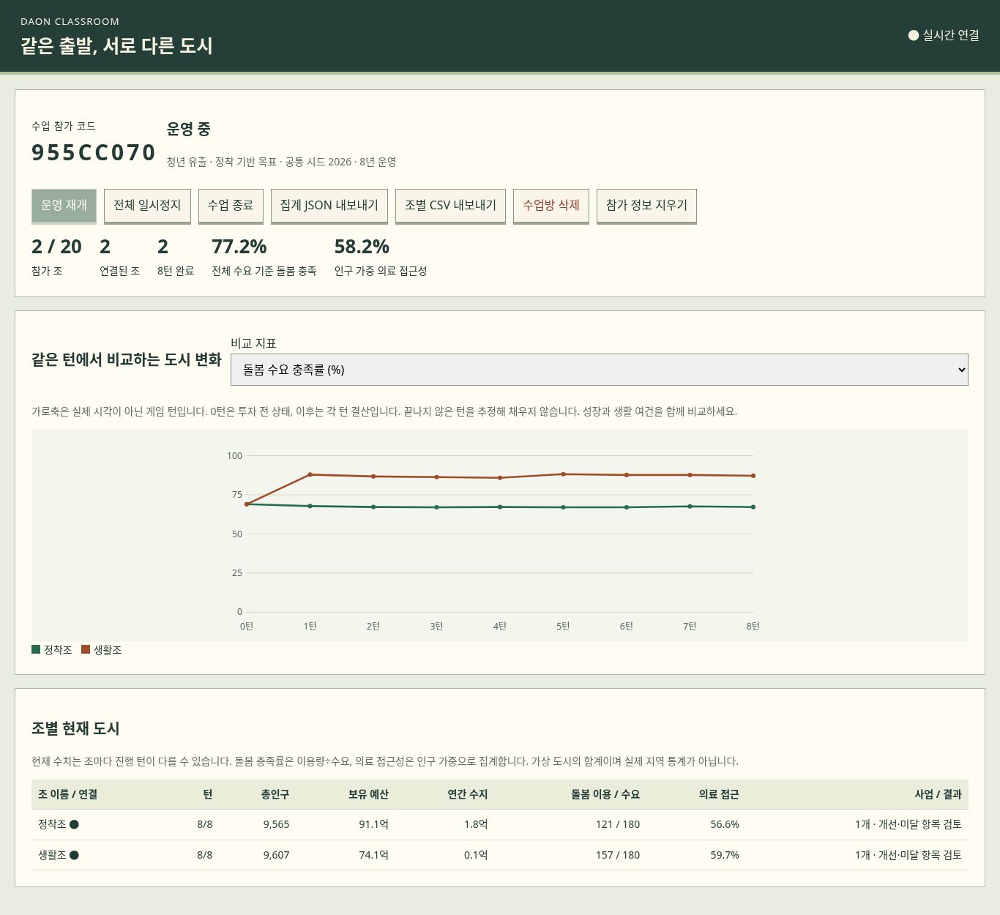

핵심 질문: “같은 도시인데 왜 다른 미래가 만들어질까?”
20명은 2인 1조·10개 도시로 운영합니다. 한 조에 조작 기기 하나, 교사는 집계 화면을 띄웁니다. 한 판 시간은 첫 플레이 20~30분 예상이며 학생 실측값이 아닙니다.
| 50분 기준 | 활동 | 관찰·발문 |
|---|---|---|
| 0~5분 | 사전 학습 핵심 확인 | 인구 감소와 삶의 질 악화는 항상 같은가? |
| 5~9분 | 교사 짧은 시연·조별 참가 | 지역 문제, 비용, 효과 조건 중 무엇을 봤나? |
| 9~31분 | 조별 정책·사건 대응 | 4턴 무렵 역할 교대. 필요할 때만 전체 일시정지. |
| 31~37분 | 종료·활동지 정리 | 목표 달성보다 선택과 결과의 설명을 준비. |
| 37~46분 | 서로 다른 2~3개 조 비교 | 같은 턴에서 차이가 생긴 조건은? |
| 46~50분 | 현실과 모형 구분·개별 정리 | 게임이 생략한 조건은 무엇인가? |
첫 수업은 같은 시나리오·목표·시드로 통일합니다. 주거·일자리와 생활서비스 등 탐색 방향은 제안하되 정책 순서를 정답으로 주지 않습니다. 같은 시드라도 도시 상태와 선택에 따라 사건이 달라질 수 있습니다.

그림은 자동화 검증용 두 조의 실행 예시이며 실제 학생 결과가 아닙니다. 특정 정책의 보편적 효과나 모범 답안으로 제시하지 않습니다.
| 학생의 판단 | 교사의 후속 질문 / 해석 방향 |
|---|---|
| “센터를 지었는데 기대만큼 이용하지 않아요.” | 정원과 실제 이용을 구분했나? 인력·접근성·수요·운영비를 함께 보게 한다. |
| “빈집을 정비했는데 사람이 많이 오지 않아요.” | 주택 외에 채용 가능한 일자리와 정착 조건이 있는가? 단순한 카드 조합 보너스로 설명하지 않는다. |
| “인구는 줄었는데 돌봄 충족률이 올랐어요.” | 공급·접근성 개선인가, 수요 감소인가, 둘 다인가? 이용자 수와 수요 분모도 확인한다. |
| “우리 조 예산이 더 많으니 더 성공했어요.” | 투자를 적게 했는가, 지속 운영비를 줄였는가? 서비스와 취업 변화도 함께 비교한다. |
| “다른 조보다 더 좋은 정책인데 결과가 달라요.” | 같은 턴인가? 대상 생활권의 기존 시설·수요·일자리·주택 조건이 같은가? |
추세 차트는 0턴의 투자 전 상태와 각 턴 결산입니다. 현재 상태 표는 턴 중 투자비가 먼저 반영될 수 있습니다. 조별 진행 속도가 다르면 현재 수치만으로 비교하지 않습니다.
전체 돌봄 충족률은 이용 합 ÷ 수요 합, 의료 접근성은 인구 가중 평균입니다. 조별 비율의 단순 평균으로 해석하지 않습니다. 수업 후 CSV·JSON을 내보내고 필요에 따라 수업방을 종료·삭제합니다.
| 평가 관점 | 확인할 증거 |
|---|---|
| 문제 발견 | 지역의 실제 지표와 지도 상태를 근거로 문제를 설명한다. |
| 정책 판단 | 비용·기간·유지비와 효과의 조건을 함께 고려한다. |
| 인과 설명 | 전후 수치를 제시하고 선택→조건 변화→결과로 설명한다. |
| 현실 확장 | 게임의 단순화를 지적하고 권리·형평·세대 간 책임을 논의한다. |
각 항목은 “근거가 구체적임 / 일부 제시 / 추가 설명 필요”로 피드백할 수 있습니다. 게임 승패나 인구 증가량 자체를 점수로 바꾸지 않습니다.
| 사진에서 확인한 내용 | 자료·게임에서 다루는 범위 |
|---|---|
| 인구 과잉: 식량·일자리·시설·주택 부족, 자원 부양력 | 사전 학습에 포함. 게임은 지역 수요·공급을 다루지만 식량 생산·빈곤·국가 인구 억제 정책은 직접 구현하지 않음. |
| 저출생·고령화의 원인·영향·정책 | 사전 학습과 토론에 포함. 게임은 돌봄·주거·고용·의료 접근을 다루지만 실제 출산 결정의 복합성을 재현하지 않음. 돌봄 개선이 출생을 자동으로 늘리는 규칙은 없음. |
| 우리나라 지역 격차: 수도권 집중·비수도권 유출 | 3생활권의 주거·일자리·서비스 차이와 연결. 특정 실제 지역을 그대로 재현한 것은 아님. |
| 세대 간 정의·일생활 균형·양성평등·노인 경험과 참여 | 사진 내용을 바탕으로 토론·평가 질문에 반영. 모두 독립적인 게임 지표나 정책 버튼으로 구현된 것은 아님. |